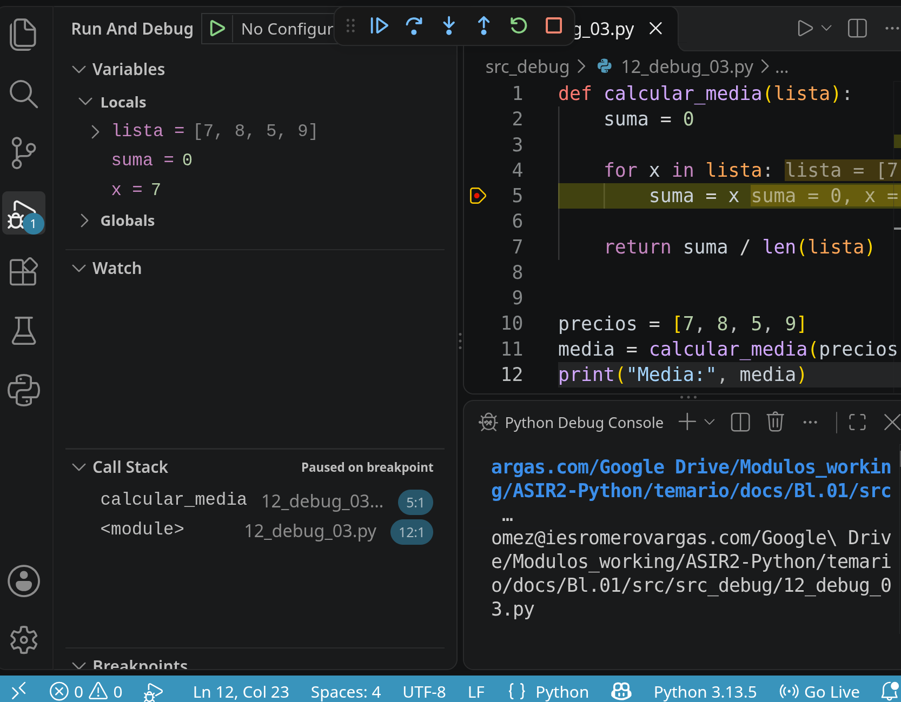

Depuración de scripts Python en Linux con VS Code
1. Introducción
La depuración o debugging es el proceso mediante el cual se analiza la ejecución de un programa para localizar y corregir errores. No todos los errores se presentan de la misma forma.
Al finalizar este tema el objetivo es ser capaz de:
- distinguir entre errores de sintaxis, errores en tiempo de ejecución y errores lógicos.
- utilizar
breakpoint()ypdb. - depurar scripts con Visual Studio Code.
1.1. Errores de sintaxis
Se producen cuando el código no cumple las reglas del lenguaje.
Python no puede ejecutar el programa porque falta : al final de la condición.
Idea clave
Los errores de sintaxis suelen ser sencillos de localizar porque Python indica el punto en el que detecta el problema.
1.2. Errores en tiempo de ejecución
El programa comienza a ejecutarse, pero se produce una excepción.
Python mostrará un mensaje parecido a:
La información mostrada forma parte del traceback, que indica por qué ha fallado el programa y en qué línea se produjo el error.
1.3. Errores lógicos
Son los errores en los que centrarse especialmente. El programa se ejecuta sin excepciones, pero produce un resultado incorrecto.
El programa muestra:
pero el resultado correcto debería ser:
El problema está en:
En cada iteración se sustituye (y no actualiza) el valor anterior. La operación correcta sería:
Importante
En un error lógico Python no tiene por qué mostrar ningún mensaje. El programa puede terminar aparentemente bien aunque el resultado sea incorrecto.
2. Una metodología para localizar errores
Depurar no consiste en modificar líneas al azar hasta que el programa funcione. Es preferible seguir un proceso qeu podría ser
1. Reproducir el fallo
↓
2. Determinar el resultado esperado
↓
3. Si es necesario reducir los datos de entrada
↓
4. Localizar la zona sospechosa y observar variables
↓
5. Añadir print(), logging o colocar un breakpoint
↓
6. Avanzar paso a paso hasta identificar la causa
↓
7. Corregir y volver a probar
2.1. Determinar el resultado esperado
Si tiene:
la media esperada es 7.25: antes de depurar debe saber qué resultado debería obtenerse.
2.2. Reproducir el fallo
Es importante disponer de datos que hagan aparecer el error. Los datos pequeños y fáciles de comprobar manualmente son ideales.
2.3. Formular hipótesis
Por ejemplo:
Creo que el contador se reinicia en cada iteración.
La depuración consistirá en comprobar si esa hipótesis es cierta.
Depurar es comprobar
Una buena depuración intenta responder preguntas como:
- ¿Qué valor tiene esta variable?
- ¿Qué rama del
ifse está ejecutando? - ¿Cuántas veces entra en este bucle?
- ¿Dónde cambia por primera vez el valor esperado?
3. Primera aproximación: depuración con print()
La técnica más sencilla consiste en añadir mensajes temporales al programa.
numeros = [10, 20, 30]
total = 0
for numero in numeros:
total = numero
print("numero:", numero)
print("total:", total)
print("Resultado:", total)
Salida:
Puede comprobar que total no acumula los valores.
3.1. Mensajes claros
Es mejor:
que:
También puede utilizar f-strings:
3.2. Inspeccionar tipos
Algunos errores se deben a tipos inesperados.
Resultado:
Aunque el usuario escriba un número, input() devuelve una cadena.
3.3. Limitaciones de print()
print() es útil, pero tiene limitaciones:
- obliga a modificar el código y es fácil olvidar eliminar mensajes tras la depuración.
- no permite detener el programa ni permite avanzar instrucción a instrucción.
- resulta incómodo en programas grandes.
4. breakpoint() y pdb
Python incorpora la instrución breakpoint(). Cuando la ejecución alcanza esa línea, el programa se detiene y abre el depurador interactivo pdb.
Podemos ejecutar el programa desde Linux:
Cuando se alcance el punto de interrupción aparecerá:
4.1. Comandos básicos de pdb
| Comando | Función |
|---|---|
p expresion |
Mostrar una variable o expresión |
n |
Ejecutar la siguiente línea |
s |
Entrar en una función |
c |
Continuar hasta el siguiente breakpoint |
l |
Mostrar código alrededor de la línea actual |
q |
Salir del depurador |
4.2. Ejemplo
def calcular_descuento(precio, porcentaje):
descuento = precio * porcentaje / 100
precio_final = precio - descuento
return precio_final
precio = 100
porcentaje = 20
breakpoint()
resultado = calcular_descuento(precio, porcentaje)
print(resultado)
Podemos consultar:
o:
Diferencia entre n y s
n ejecuta una llamada a función sin entrar en ella.
s entra en la función para depurarla línea a línea.
5. Depurar en Visual Studio Code
Para depurar Python con VS Code necesita primero instalar la extensión oficial de Python Debugger de Microsoft.
Y como ejercicio práctico vamos a depurar este script:
Supongamos este programa:
def calcular_media(lista):
suma = 0
for x in lista:
suma = x
return suma / len(lista)
precios = [7, 8, 5, 9]
media = calcular_media(precios)
print("Media:", media)
Para colocar un breakpoint haga clic a la izquierda del número de línea y aparecerá un punto rojo. Para este ejemplo se situa en la línea
5.1. Iniciar la depuración
Acceda el menú superior Run, seleccione Start Debugging y elija Python Debugger y Python file. El programa se detiene en el breakpoint.

5.2. Controles del depurador
- "Continue" (F5): Continúa la ejecución hasta el siguiente breakpoint.
- "Step Over" (F10): Ejecuta la línea actual y pasa a la siguiente sin entrar en funciones.
- "Step Into" (F11): Entra dentro de una función llamada en la línea actual.
- "Step Out" (Shift + F11): Continúa hasta salir de la función actual.
Qué control usar
Si sospechas que una función contiene el error, utiliza Step Into.
Si ya confías en esa función, utiliza Step Over.
5.3. Inspección de variables
Cuando el programa se detiene, VS Code muestra a la izquierda el panel Variables. En el ejemplo anterior podemos observar:
Si pulsa F5 en la siguiente iteración se observa:
Y pulsando F5 de nuevo:El comportamiento revela el problema: suma va tomando el valor de x en cada iteración y no el acumulado. La instrucción debería ser:
5.4. Breakpoints condicionales
Un bucle puede ejecutarse cientos de veces. Puede crear un punto de ruptura que solo se active cuando se cumpla una condición.
Por ejempo, si el bucle itera sobre una lista muy grande de números:
basta editar el breakpoint, por ejemplo numero == 50 o numero < 0
Caso de uso
Si un error solo aparece al procesar el usuario con identificador 153, no tiene sentido detenerse en los 152 usuarios anteriores.
5.5. Pila de llamadas
El panel Call Stack muestra la cadena de funciones que ha llevado hasta el punto actual.
def aplicar_iva(precio):
return precio * 1.21
def calcular_total(precios):
total = 0
for precio in precios:
total += aplicar_iva(precio)
return total
def generar_factura():
precios = [10, 20, 30]
return calcular_total(precios)
resultado = generar_factura()
print(resultado)
Durante la ejecución si situa un breakpoint en aplicar_iva se mostrará:
Es decir, la cadena de llamadas es_
6. Errores lógicos frecuentes
6.1. Acumuladores mal actualizados
Ya mostrado previamente, el código incorecto es
y lo correcto es sustituir total = precio por total += precio
6.2. Ejercicio: acumulador mal iniciado
Este ejemplo es un contador de números pares que no funciona correctamente. Revisar y corregir usando el depurador
numeros = [3, 2, 6, 23, 16, 12, 67, 2]
for numero in numeros:
contador = 0
if numero % 2 == 0:
contador += 1
6.3. Ejercicio: Sustituir en lugar de añadir
Este ejemplo crea una lista con los valores superiores a un límite establecido. Corregir usando el depurador:
LIMITE = 40
temperaturas = [36, 41, 47, 29, 44, 23, 39, 40, 12]
resultado = [] # lista con valores superiores a LIMITE
for t in temperaturas:
if t > LIMITE:
resultado = [numero]
6.4. Errores en valores límite
En el caso anterior hay una selectiva
Si la temperatura LIMITE debe cumplir la condición debería ser:
Para comprobar límites es útil probar los valores previos y siguientes del límite, en el caso anterior probar que funciona bien con los valores
Idea final
Depurar muchas veces consiste en encontrar el primer punto en el que el comportamiento real del programa deja de coincidir con el comportamiento esperado.